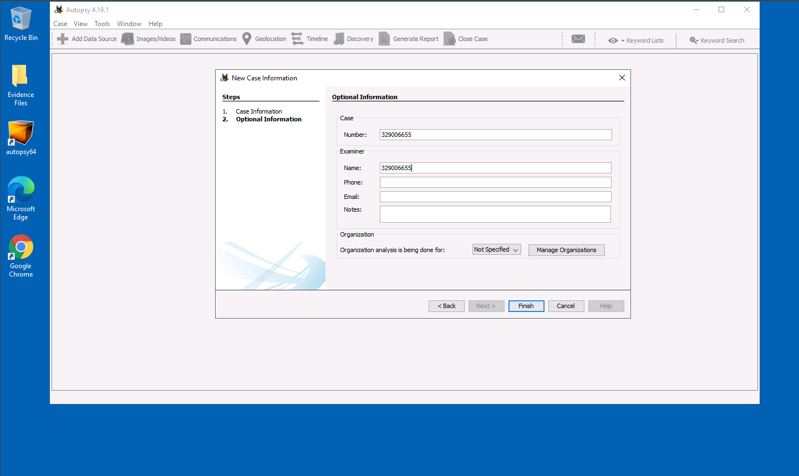
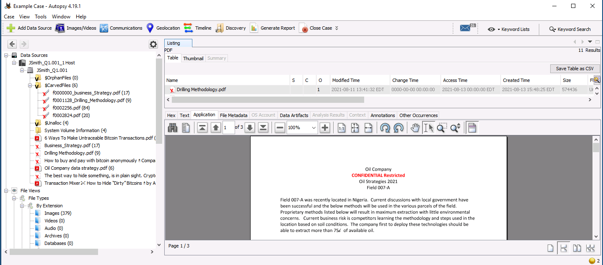

Digital Forensics Investigation
Start autopsy64 and select new case.
Add a case name, set the directory at C:\Users\LabUser\Desktop\Evidence Files, and set case number and examiner number.


At Select Host, leave the default option and select next. Select “Disk Image or VM File” and hit next.
For data source path, select C:\Users\LabUser\Desktop\Evidence Files\JSmith_Q1.001.
Leave the other options as default and select next.
Leave configure Ingest defaults and select next.
When the message “Data source has been added to the local database. Files are being analyzed” is complete, hit finish.
There are three pdf files that are labeled as confidential restricted:
Business Strategy, Drilling Methodology,and Oil Company Data Strategy”.
These files are potentially the proprietary data senior management is concerned about.

Several files regarding how to perform covert bitcoin transactions were noted with the proprietary data.
While file timestamps are easily modified in Windows, Timeline can give a comprehensive file history assuming timestamps were not altered.
It can be shown that proprietary data was obtained and deleted ($CarvedFiles) on 08/11/2021.
Mike Morris is shown to be the owner of the proprietary files.
On 08/12/2021, Numerous articles on the topics of covert cryptocurrency transactions were similarly treated, along with more propriety data.
Addition jpeg images were noted with the propriety data, possible supportive information regarding the data.
On 8/13/21, a System Volume Information folder can be seen with numerous creations of files from the previous two days.
This could indicate a USB insertion and copying of said files.
An Autopsy Regular Expression email search returned one result, a possible email m+@nN.NI embedded in a deleted pdf file (based on a hex header) found in the slack space.
Proprietary data was clearly accessed by John Smith from 8/11/21-8/13/21.
Morris could have been the target of Mr. Smith's social engineering attack or complicit with the unauthorized access.
Guides on covert bitcoin transactions imply incentive to sell the proprietary data to an outside source.
If the hidden string is an email, it could be tied with attempts to receive cryptocurrency or contact an anonymous buyer.
+ alias in emails is a common way to produce multiple forwarding emails, and custom email domains can be obtained at a relatively low cost.
To make any conclusive ties to any of the above theories, company email servers should be searched for any communications to the email address found.
The timeline analysis would support the theory of Mr. Johnson copying the proprietary data to sell once cryptocurrency payment was complete.
The evidence is only conclusive of unauthorized access by Mr. Smith,
so at the very least he is in violation of the companies AUPs along with possibly the cryptocurrency articles.
Selling the proprietary data would breach the NDA agreement, but current evidence is indeterminate and further analysis should be conducted on other relevant devices.